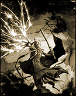

Forums galactiques > Taverne galactique : lieu de discussion informel > Machine a café [Rp!]
Pages : 1 2 ... 149 150 151 ... 443 444
| Leorique Réputation à la taverne : 191  17/07 ETU 18:34 | Score : 0 Détails L'albinos prend son thé avec prudence cette fois ci , ne voulant pas se brûler , il va s'asseoir dans un coin, l'air songeur et assez intimidé par tout ce monde qui arrive... c'est agréable ici ... mais parfois c'est éprouvant se dit-il.
Il regarde la jeune fille et sourit légèrement en se disant qu'elle semblait aussi mal a l'aise que lui.il hausses des épaules et retourne a ses pensées. « Bonjour messire ... comment allez vous ... ? » demande-t-il a booster | ||
| Booster Réputation à la taverne : 1494  17/07 ETU 18:34  | Score : 0 Détails "Et tu as bien fait ! Tu vas bien, Sërlynna ?
Bonsoir à vous, Hecate. Bah, je ne me porte pas trop mal. Et vous, comment allez-vous ?" | ||
| -[Aerÿnn]- Réputation à la taverne : 2661  17/07 ETU 18:37 | Score : 0 Détails Sërlynna manqua de bégayer par sa timidité et finalement trouva les mots :
"Je vais bien oui merci... *pause* Je m'excuse, je vais vous laisser un peu..." Et elle se faufila dans vers autre table, par peur de gêner sa 'grande soeur' comme elle l'apellait et son compagnon. | ||
| Abbadon Réputation à la taverne : 225  17/07 ETU 18:38 | Score : 0 Détails AU fait comandant Booster, je tient a m'excuser une fois de plus pour mes actions au concours de poésie.
| ||
| Hecate de Lunargent Réputation à la taverne : 293  17/07 ETU 18:40 | Score : 0 Détails "Tien, la jeunesse fait bande à part..."
"Oh, je vais très bien. La routine se réinstalle..." | ||
| Booster Réputation à la taverne : 1494 17/07 ETU 18:44 | Score : 0 Détails Booster regarda partir la jeune fille... Il murmura à Aerÿnn, un peu gêné et désolé pour elle :
"La pauvre ! Elle semble tellement gênée par tout ce monde ! Ou peut-être bien par moi aussi..." Puis il se retourna vers Abbadon. "Bah, sans rancune. Nous mettrons ça sur le compte d'une erreur de jeunesse !" | ||
| eldrad1 Réputation à la taverne : -5  17/07 ETU 18:47 | Score : 0 Détails Un homme entra dans la salle et se fendit d'une reverence parfaite qui fit tournoyer sa cape, tout en laissant entre-apercevoir l'amure militaire rutilante et la longue epée battant son flanc. Il sortit une piece de sa poche et se mit a parler:
- Je vous souhaite bien le bonjour messieurs-dames. Je me presente: Eldrad 1° du nom, noble commandant d'une modeste planete lointaine. La piece qu'il tenait dans sa main s'envola et se ficha directement dans la fente de la machine a cafe qui se mit en marche. Le gobelet fumant se mit lui aussi a voler et s'arreta dans la main de l'homme. - Comme vous pouvez le constater, mon peuple possede de modeste talent telekinesique, mais malgre notre ancienne appartenance a la federation, mon ambition et plus le commerce et la paix que la violence et la guerre, bien que mon peuple et moi meme ayont les capacitès pour. Je recherche ainsi des partenaires. | ||
| Leorique Réputation à la taverne : 191 17/07 ETU 18:49 | Score : 0 Détails Il regarde partir la jeune fille et hausses des épaules, la comprenant il la regarde un instant puis reporte son attention sur Hécate et sur Abbadon, se disant qu'ils devraient peut être le couple un peu plus tranquille.
Il finit son thé encore chaud et grimace légèrement. Il deglutit difficilement en voyant un homme ne armure ... se demandant bien ce qu'il faisait la armé... trop de monde et vraiment peu a l'aise et se tasse dans son coin. | ||
| eldrad1 Réputation à la taverne : -5 17/07 ETU 18:51 | Score : 0 Détails "ne vous inquietez pas, jeune homme, cette epee n'est qu'une arme de parade, et je ne la degaine que contre mes ennemis"
| ||
| Hecate de Lunargent Réputation à la taverne : 293 17/07 ETU 18:53 | Score : 0 Détails L'entrée d'un nouveau personnage lui fit penser qu'il y avait décidément trop de monde attroupé... L'air commençait à manquer. Elle dit bonjour au nouvel arrivant et proposa:
"Je vous propose de nous répartir un peu mieu. Depuis le début, nous venons tous nous poser autour de la même table, et celà à l'air d'en gêner plus d'un. Emplissons l'espace de cette pièce, peut être cela diminuera ce trouble." | ||
| -[Aerÿnn]- Réputation à la taverne : 2661 17/07 ETU 18:56 | Score : 0 Détails Sërlynna regardait l'heure et semblait s'impatienter, voire même inquiète.
Elle jeta un regard explicite à Aerÿnn et celle-ci comprit. Elle embrassa son compagnon et lui dit discrètement : 'Je t'aime... Je dois ramener Sërly, on se reverra plus tard...' Booster lui répondit rapidement : "Non attends. Nous y allons ensemble." Ainsi, ils saluèrent tous les trois la salle qui ne manquait pas de visiteurs ce soir. | ||
| eldrad1 Réputation à la taverne : -5 17/07 ETU 19:01 | Score : 0 Détails " Je vous salut moi aussi bien bas en esperant vous revoir un jour dans des conditions aussi agreables "
L'homme fit a nouveau une reverence et sortit de la salle apres un magnifique lancé de son gobelet vide qui finit dans la poubelle | ||
| Sanji Réputation à la taverne : 69  17/07 ETU 19:13 | Score : 0 Détails Sanji, la clope aux lèvres, les mains dans les poches, les yeux dans le vague, il passe devant les gens en ne leur accordant qu'un signe de tête discret et va servir un café bien serré.
| ||
| Hecate de Lunargent Réputation à la taverne : 293 17/07 ETU 19:17 | Score : 0 Détails Hecate alla s'installé à proximité de Leorique, ignorant le mouvement de recul de celui ci.
"Bonsoir Sanji. Comment allez vous ? Merci pour votre compréhension dans l'affaire Aaariba. Ce jeune commandant est un peu mon poulain, mais mes leçons n'ont pas l'air d'être bien passées..." | ||
| Sanji Réputation à la taverne : 69 17/07 ETU 19:22 | Score : 0 Détails Le jeune homme distrait, souleve à peine un sourcil.
"Ah ouais... Bah dites lui d'accepter mon p'tit cadeau. Il est vexant quand même." | ||
| Hecate de Lunargent Réputation à la taverne : 293 17/07 ETU 19:24 | Score : 0 Détails "Je lui dirai. Merci de votre générosité."
| ||
| Leorique Réputation à la taverne : 191 17/07 ETU 19:27 | Score : 0 Détails Leorique perdu dans ses pensées n'avait pas trop participé, honteux il dit a Hécate. « oh pardonnez ... j'étais ... ailleurs .... je ne suis pas très a l'aise avec tout ce monde ... excusez moi ... ». il soupire légerement, manquant de redevenir songeur. puis il hausses des épaules un peu gêné
| ||
| Hecate de Lunargent Réputation à la taverne : 293 17/07 ETU 19:35 | Score : 0 Détails Elle lui caressa la tête, le regard perdu, comme ci quelquechose de lointain venait de la rattraper.
| ||
| Atheos Réputation à la taverne : 133  17/07 ETU 19:37 | Score : 0 Détails Atheos, assis ne disait plus rien depuis un moment. Les bras croisés, il s'était assoupit. Il se déséquilibra et tomba sur le sol. La chute le le réveilla même pas. Désormais couché sur le sol, comme mort Le jeune homme récupéra une partie de sa nuit.
| ||
| Leorique Réputation à la taverne : 191 17/07 ETU 19:40 | Score : 0 Détails « Euh ... j'ai dit quelque chose de mal Hécate ... ? » il a regarde avec inquiétude , elle avait l'air bizarre, il espérait que ce n'était pas a cause lui.
Puis il voit Aethos s'affaler par terre. « euh ... c'est juste qu'il est fatigué ou il ne sent pas bien ... il faut faire quelque chose ... ? » |
Pages : 1 2 ... 149 150 151 ... 443 444
Forums galactiques > Taverne galactique : lieu de discussion informel > Machine a café [Rp!]